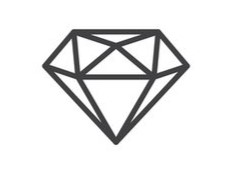
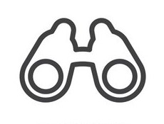

Introducción
En la actualidad, las empresas productoras buscan la incrementación de las ganancias, por ende, aprovechan al máximo sus recursos y disponen de controles efectivos, los cuales se aplican dentro de las organizaciones para cumplir con sus respectivos objetivos.
Para el desarrollo de las operaciones de una sociedad, los recursos disponibles para la elaboración del producto son una parte significativa. Estos recursos deben estar bajo una inspección constante que asegure su uso correcto y permita aprovecharlos al máximo, ya que esto influye en la estabilidad económica del negocio.
Nombre
El nombre fue creado en el año 2020, por el Director General Axel Puschendorf Fahrenkrug. La palabra “Nova” fue inspirada por la innovación de nuevos métodos agrícolas sostenibles en la productividad.
Visión
Promover el crecimiento y el liderazgo en la compañía y en los países en donde se tenga presencia, a través de la innovación en nuevos segmentos bajo una cultura de sustentabilidad y compromiso.
Misión
Ser proveedores confiables de alimentos nutritivos y beneficiosos para la salud de las personas comprometiéndonos a ofrecer productos de alta calidad que no solo satisfagan las necesidades nutricionales.
Descubre más sobre Nova
- Visita nuestra página de surgimiento para conocer cómo comenzó esta organización.
- Explora nuestra sección de características para descubrir sus principales atributos.
- Explora más historias de éxito y descubre testimonios de agricultores de la zona.